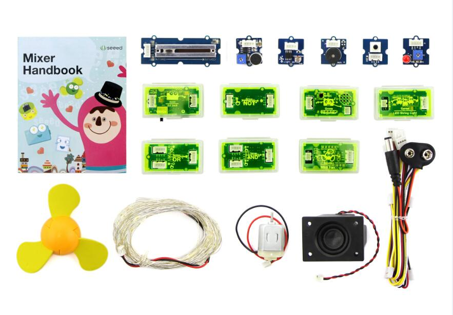

Grove - Mixer Pack V2
The Grove - Mixer Pack V2 is a stand-alone, Lego-like electronics kit that consists of 13 select Grove modules from the Grove System developed by Seeed Studio. These mini-modules can be used as building blocks to create electronic circuits and prototypes quite rapidly without necessarily using a Microcontroller board such as a Seeeduino or an Arduino.
The 13 Grove modules included are a combination of sensor modules, actuators, logic and power modules that are extremely easy to use and fun to work with. Within minutes, you can design new circuits and assemble functional prototypes.
By connecting different input and output modules, a variety of projects can be made. For example, a sound or a light sensor can be used as input to trigger an output such as lighting up of an LED or activating a small DC motor circuit. Logic gate modules can add more flexibility into the logic through which inputs will trigger outputs.
These modules are small and colorful bits of electronics, and so much fun to play with for both children and adults alike.
With the Grove - Mixer Pack V2, you can easily learn the basic concepts of electronics, and also improve your practical ability to apply these concepts. This is the perfect way to let yourself into the wonderful world of electronics by working on your very own interactive projects.
Model:811009001
Unboxing
You will find the following on opening this Grove mixer pack:

- A Mixer Handbook that will help you get started on your projects quickly. This includes basic information about all the Grove Modules included in the pack and shows you how to build a few sample projects as well.
- 13 Grove Modules:
- 1x Grove - DC Jack Power
- 1x Grove - Recorder
- 1x Grove - LED String Light
- 1x Grove - Mini Fan
- 1x Grove - NOT
- 1x Grove - OR
- 1x Grove - AND
- 1x Grove - Buzzer
- 1x Grove - Light Sensor
- 1x Grove - Red LED
- 1x Grove - Sound Sensor
- 1x Grove - Slide Potentiometer
- 1x Grove - Button
- Grove module accessories:
- 1x DC Motor to work with the Grove - Mini Fan module
- 1x Colorful Fan that fits onto the DC Motor
- 1x Small Audio Speaker to work with the Grove - Recorder module
- 1x LED String Light to work with the Grove - LED String Light module
- 7x Grove Cables (3x 200mm, 3x 50mm, 1x Branch Cable)
Usage
Its pretty easy to build Grove circuits using the Grove modules in your Mixer Pack.
All circuits are built by combining the following four types of modules:
- 1. Power Modules
- These supply power to the circuit. The Grove Mixer Pack V2 includes 1 Power Module - the Grove - DC Jack Power. No matter what you are building, you will always need to use this one.
- 2. Input Modules
- These are typically used to relay sensory inputs into the circuit. The Grove Mixer Pack V2 has 4 Input Modules - a light sensor, a sound sensor, a slide potentiometer and a momentary switch. Based on the inputs received from these modules from these modules, you can choose to trigger an action using an Output Module.
- 3. Output Modules
- Triggers from the Input Modules can be translated to actions using Output Modules. The Grove Mixer Pack V2 has 5 Output Modules - an LED light, an LED String light, a sound recorder, a fan motor and a buzzer.
- 4. Logic Gates Modules
- These are used in conjunction with Input Modules and can be used to enhance the logic for triggering a specific output. The Grove Mixer Pack V2 has 3 Logic Gates Modules - one each for AND, OR and NOT gate functions.
Building your first circuit
You can build a Grove circuit using the Grove Modules in 3 simple steps:
Follow these steps in order to build a Grove circuit using the Grove Modules:
- STEP 1 - Connect the Power Module to a power source
- First of all, connect a reliable power source to the power module. You can use a 9V battery that connects to the Grove - DC Jack Power module using the 9V battery connector cable that comes with the pack. Alternatively, you can use a common wall power adapter such as a 5V/1A adapter used for charging cell phones. Once you have connected the Grove power module to a power source, turn the ON/OFF switch on the module to ON position. A green LED on the board of the power module should light up. If this does not happen, double check your connections and power source. If the green LED lights up, this means you have a reliable working power source. Turn the switch back to OFF position now and proceed to the next step.
- STEP 2 - Connect the Input Module to the Power Module
- Using a 4-Pin Grove cable, connect the input module you wish to choose for your circuit to the power module. Place the power module in front of you and place the input module to the left of the power module. Then using a 4-Pin Grove Cable, plug one end of it into the input module and the other end into the left-side Grove connector of the power module. For example, to use a momentary switch to turn on and off an LED, connect the Grove - Button module to the left-side of the power module using a 4-Pin Grove Cable.
The input module could either be directly connected to the power module or via a Logic Gate module.
- STEP 3 - Connect the Output Module to the Power Module
- Using a 4-Pin Grove cable, connect the output module you wish to choose for your circuit to the power module. Place the power module in front of you with the input module already connected to the left-side of the power module. Then using a 4-Pin Grove Cable, plug one end of it into the output module and the other end into the right-side Grove connector of the power module. For example, to build a circuit that lights up an LED, connect the Grove - Red LED module to the right-side of the power module using a Grove Cable.
Output module always connect directly to the power module in this way.
You now have completed building your Grove circuit. Turn back ON the ON/OFF switch on the Grove - DC Jack Power module now and watch your circuit come alive!
Press on the momentary switch to light up the LED
Using Logic Gate Modules
The logic gate modules can be used to enhance the logic based on which an input module or a set of input modules can be used to trigger a desired output. They are typically placed between the input module and the power module in a Grove circuit.
There are three types of Logic Gate Modules:
This is the simplest of all logic gate modules and connects to one input module. It simply takes the signal generated by an input module and inverts it. A HIGH signal from an input module is converted to a LOW signal. A LOW signal from the input module is converted to a HIGH signal going towards the output module.
- Typical Usage: An LDR based light sensor module like the Grove - Light Sensor generates a HIGH signal in bright light and a LOW signal in the dark. Therefore, it can be used to turn ON an LED in bright light and turn it OFF in the dark. However, you may want a circuit where the LED lights turn ON in the dark and remain OFF in bright light. This can be done by adding a Grove - NOT module between the Grove - Light Sensor input module and the Grove - DC Jack Power module. With the NOT gate in use, you will observe that in bright light, when the LDR exhibits a low resistance and the signal generated by the light sensor module is HIGH, the NOT gate inverts it into a LOW signal and the LED lights do not turn ON in bright light any more. Alternatively, when it is dark and the LDR exhibits a high resistance and the signal generates by the light sensor module is LOW, the NOT gate converts the LOW signal into a HIGH signal resulting in the LED lights getting turned ON in the dark.
This module can connect to two input modules. Its purpose is to generate a HIGH signal when at least one of the two input modules connected to it supplies a HIGH signal. If the signal received from both the input modules is LOW, the OR gate supplies a LOW signal towards the output module.
- Typical Usage: Use this when you need one of two sensory inputs to trigger an output. For example, lets say you want to build a circuit that lights up some LED lights either on music OR when you manually switch them on. To build such a circuit, you will need two input modules - the Grove - Sound Sensor and the Grove - Slide Potentiometer. These two input modules can then be connected to the left-side of the Grove - OR gate module. The output from this logic gate module will connect to the left-side of the power module, while the right-side will be connected to the LED lights module (Grove - Red LED or Grove - LED String Light). Now, when you switch ON the circuit, observe what happens. You will see that the LED lights turn ON either when there is some sound or music that is detected by the sound sensor OR when you manually move the slider on the Grove - Slide Potentiometer from minimum voltage (GND) to maximum (VCC). This also implies that if the Grove - Slide Potentiometer is supplying a HIGH signal to the LED lights, then no matter what the input from the sound sensor is, the LED lights will always stay ON. Alternatively, if the Grove - Slide Potentiometer is supplying a LOW signal to the LED lights, then the LED lights will flash based on whether the output from the sound sensor is HIGH or LOW.
This module can connect to two input modules. Its purpose is to generate a HIGH signal only when both of the two input modules connected to it supply a HIGH signal. If the signal received from any of the two input modules is LOW, the AND gate supplies a LOW signal towards the output module.
- Typical Usage: Use this when you need two sensory inputs to trigger an output. For example, lets say you want to build a circuit that lights up some LED lights either on music but only in the dark. To build such a circuit, you will need two input modules - the Grove - Sound Sensor and the Grove - Light Sensor (The Grove - Light Sensor module will be used in conjunction with the Grove - NOT logic gate so that lights switch ON only in the dark). These input side modules can then be connected to the left-side of the Grove - AND gate module. The output from this logic gate module will connect to the left-side of the power module, while the right-side will be connected to the LED lights module (Grove - Red LED or Grove - LED String Light). Now, when you switch ON the circuit, observe what happens. You will see that the LED lights turn ON when it is both dark AND there is some sound or music playing. This also implies that even if the Grove - Sound Sensor is supplying a HIGH signal to the LED lights when it detects sound or music, then unless the Grove - Light Sensor detects darkness, the LED lights will always stay OFF. Only when it is dark AND there is sound or music detected by the sound sensor will the LED lights will flash.
Grove Module Details
Grove - DC Jack Power
The Grove - DC Jack Power module powers all other modules from the Mixer Pack. A power source can be connected to it via a standard cylindrical DC plug. The power source can either be a 9V battery or any 5.5-20V wall adapter. The module can achieve a 2A continuous output current over a wide input supply range with excellent load and line regulation.
Grove - Recorder
The Grove - Recorder module can record 8-20 secs of audio and play it back. The default recording time is 10 secs. The module uses non-volatile storage, which means that the recorded sound or audio is not lost when the module is switched off. It remains stored in the memory and when the module is switched back on, the same sound or audio can be played again. The module is very easy to control - just press the on-board push button to record and attach the speaker included in the pack to hear the playback.
Grove - LED String Light
The Grove - LED String Light module is essentially an LED driver for the LED string lights included in your mixer pack. Working voltage of the module is 3.3V/5V, but the string light requires an input of 12V. This module therefore uses a step up DC-DC Converter to provide the requisite voltage to light up the LED string lights. The accompanying LED string light is a 5 meters long RGB LED String light that you can use to light up a Christmas tree, or decorate a part of your home.
Grove - Mini Fan
The Grove - Mini Fan module is a DC motor driver based on the AVR Atmega168 microcontroller. It can be used to run the DC motor that is included in your mixer pack. The soft-leaved fan also included in the pack can be attached to the motor make a fun project with kids. Being soft-leaved, the fan is completely safe and there is no chance of any injury. For advanced projects, the microcontroller on this module can also be re-programmed to run a servo motor as well.
Grove - NOT
The Grove - NOT module provides the function of a logical NOT gate. The NOT module has one input on the left and one output on the right. When the input signal to the module is HIGH, output is LOW. When the input signal to the module is LOW, output is HIGH.
Grove - OR
The Grove - OR module provides the function of a logical OR gate. It has two inputs on the left and one output on the right. The output of this logical OR gate module turns to HIGH when it gets a HIGH signal on any of the two inputs.
Grove - AND
The Grove - AND module provides the function of a logical AND gate. It has two inputs on the left and one output on the right. The output of this logical AND gate module turns to HIGH only when it gets a HIGH signal from both of the two inputs.
Grove - Buzzer
The Grove - Buzzer module has a piezo buzzer as the main component. The piezo can be connected to digital outputs, and will emit a tone when the output is HIGH. Alternatively, it can be connected to an analog pulse-width modulation output to generate various tones and effects.
Grove - Light Sensor
The Grove - Light Sensor module incorporates a Light Dependent Resistor (LDR). Typically, the resistance of the light sensor will decrease when the ambient light intensity increases.
Grove - Red LED
The Grove - Red LED module is similar to the Grove - LED module in that it houses an LED light source. In addition, it also has a potentiometer on-board to manage the input voltage to the LED and to adjust its brightness. The module also has mounting holes for the LED and the LED is not soldered onto the PCB. This means you can remove the Red LED that comes with the mixer pack and use any other LED of any other color or size as well. You can also use this module to add a pilot lamp for indicating power or signal presence for Arduino or Seeeduino based projects.
Grove - Sound Sensor
The Grove - Sound Sensor module is based on using a simple electret microphone microphone as a sound sensor. It can be used to detect the sound strength of the environment.
Grove - Slide Potentiometer
The Grove - Slide Potentiometer module incorporates a linear variable resistor with a total resistance of 10KΩ. When you move the lever from one side to the other, its output voltage will range from 0 V to the Vcc you apply. It connects to the other Grove modules through a standard 4-Pin Grove Cable. Three of the pins are connected to OUT (Pin 1), Vcc (Pin 3) and GND (Pin 4), while the fourth pin (Pin 2) is connected to a green indicator LED. The LED is used to visually represent the resistance change on the potentiometer.
Grove - Button
The Grove - Button module included in this mixer pack is a newer version of the Grove - Button module from Seeed Studio. It contains one independent "momentary on/off" button. “Momentary” means that the button rebounds on its own after it is released. The button outputs a HIGH signal when pressed, and LOW when released. The button signals the SIG Pin of the Grove Interface while NC is not used at all.
Sample projects
The Grove Mixer Pack modules and accessories can be used to build many fun projects. Some examples of the projects that you can do are also provided in the Mixer Handbook that you received along with the pack. Some projects are listed below as well.
Photosensitive LED
- Part list:
- Follow these step by step graphical instructions to build your project:
- Line up the modules you will need for the circuit
- Connect the modules using the 4-Pin Grove cables
- Test the circuit

Glow in the Dark String Lights
- Part List:
- Follow these step by step graphical instructions to build your project:
- Line up the modules you will need for the circuit
- Connect the modules using the 4-Pin Grove cables and power it up
- Test the circuit

Other Project Ideas
Here are some other projects that you can try out:
- Lights that flash to music
Hint: Use a combination of the sound sensor and LED string lights. Can you make the lights flash and blink in synch with the music? If you play a musical instrument such as a piano, see how the lights respond when you play.
- Lights that flash to music but only when its dark
Hint: Use a combination of the sound and light sensors along with an LED string lights. Can you guess which logic gate modules you will need to use along with the 2 sensors? You will need two!
- Add an LED light to your Bike Helmet
Hint: The circuit for this is the same as the Photosensitive Lights project shown above. Use a 9V battery to make your project portable!
- Use a piezo buzzer as a Bike Horn
Hint: Press on a button to sound a squeaky horn! Use a 9V battery to make your project portable. Explore what happens when you replace the Grove - Button with a Grove - Slide Potentiometer.
- Become a spy!
Hint: Use the sound recorder and secretly record someone's voice and play it back to them.
- Leave a loving message for your mom before you go off to school
Hint: Use the sound recorder as you did in the above project. This time, record your favorite message for a loved one (mom, dad, sibling...anyone) in your own voice and let them know they can play it for themselves when you are away!!
- Revive an old broken toy motor car
Hint: Do you have an old motorized toy car that stopped working? Chances are that its motor runs just fine and something else went wrong. See if you can open up toy and extract the motor attached to the wheels and power it up using a Grove - Mini Fan module. Try using a 9V battery for power and the slide potentiometer to vary the speed.
- Personal fan with variable speed
Hint: This is pretty easy and should not require a hint ;) Save yourself from the heat with this one!
Availability
Available at the SeeedStudio Bazaar:
Resources
Support
If you have questions or other better design ideas, you can go to our forum or wish to discuss.
Copyright (c) 2008-2016 Seeed Development Limited (
www.seeedstudio.com /
www.seeed.cc)
This static html page was created from http://www.seeedstudio.com/wiki